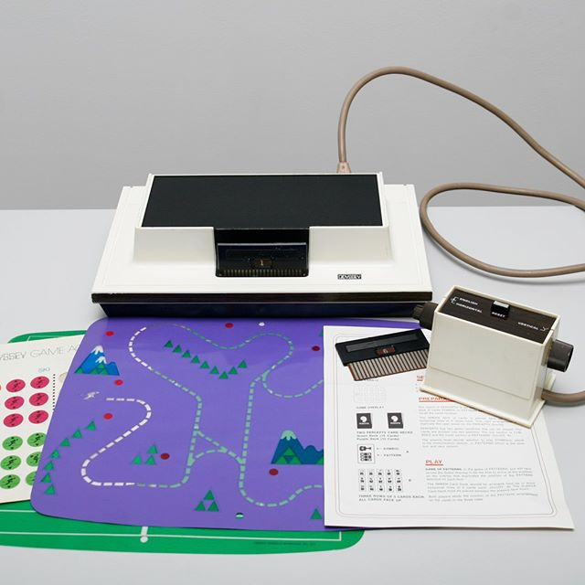

MessagePad
- Виробник:
- Apple
- Рік випуску:
- 1993
Особистий цифровий помічник на ОС Newton із сенсорним екраном, задовго до появи слова «планшет».
Шість пристроїв із колекції музею: кишеньковий комп’ютер, ігрові консолі, домашні комп’ютери й цифрова фотокамера.
Особистий цифровий помічник на ОС Newton із сенсорним екраном, задовго до появи слова «планшет».

Перша консоль, яку можна було під’єднати до телевізора.

Модель із лінійки Apple II, першого серійного комп’ютера компанії.

Одна з перших цифрових фотокамер.

Повноцінний комп’ютер у корпусі клавіатури.

Оригінал консолі, клоном якої була відома в Україні Dendy.